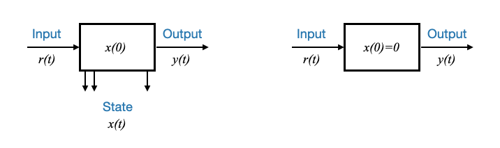
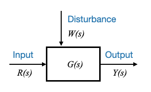
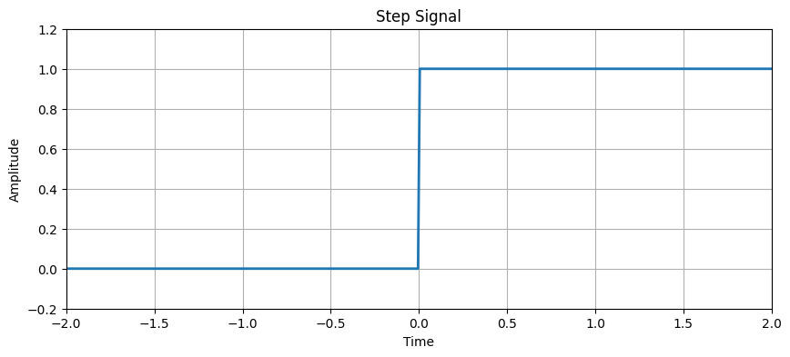

from principles_of_automatic_controls.introduction_to_control_problem import draw_mass_spring_damper
When we discuss control systems, the importance of modeling cannot be overstated. Models are mathematical representations of systems and play a pivotal role in the analysis and design of control systems. While many of you might be familiar with some of the models from previous studies, it’s always a good idea to review and set the terminologies and symbols we’ll be using throughout the course.
Popup Question: Why is modeling important in control systems? Answer: Modeling provides a mathematical representation of systems which aids in their analysis, design, and understanding.
In our last discussion, we introduced the concept of the state variable model. This model revolves around the idea that the energy state of a system can be defined using state variables.
Consider a system with state variables \(x_1, x_2, ... x_n\).
The relationship between these variables and the system’s differential equations can be represented as:
\[ \begin{aligned} \dot{x_1} &= a_{11}x_1 + a_{12}x_2 + ... + a_{1n}x_n + b_1r\\ \dot{x_2} &= a_{21}x_1 + a_{22}x_2 + ... + a_{2n}x_n + b_2r\\ \vdots\\ \dot{x_n} &= a_{n1}x_1 + a_{n2}x_2 + ... + a_{nn}x_n + b_nr\\ \end{aligned} \]
Where \(r\) is the input variable and the coefficients form the matrices \(A\) and \(B\).
Additionally, the output equation is:
\[ y = c_{1}x_1 + c_{2}x_2 + ... + c_{n}x_n + dr \]
The output is an attribute of the system and is obtained as an algebric combination of the state variables.
The model is comprised of \(n\) state equations and one output equation for a Single Input Single Output (SISO) system.
This is a \(n-th\) order system. The order of the system is directly linked to the number of state variables.
In matrix notation, this system can be represented as:
\[ \dot{x} = Ax+bu \]
and the output equation:
\[ y=cx+dr \]
Where: - \(A\) is a \(n \times n\) matrix - \(b\) is a \(n \times 1\) vector - \(c\) is a \(1 \times n\) vector - \(d\) is a scalar constant.
Popup Question: What does the order of a system represent? Answer: The order of a system is directly linked to the number of state variables which represent the energy state of the system.
Another fundamental model in control systems is the impulse response model, which is particularly useful for linear time-invariant systems.
For this model, there are two conditions to consider:
Relaxed System: A system is termed ‘relaxed’ if its initial energy storage is zero. Mathematically, this means the initial conditions or system state at \(t=0\) are zero: \(\underline{x}(t=0)=0\)
Input-Output Relationship: The impulse response model gives the relationship between the input and output of a system. However, it doesn’t provide information about the system state.
|
 |
Left: state variable model; Right: impulse response model
The impulse response model does not rely on state variables, however it is still extremly important and useful in control systems.
The impulse response model can be defined by the convolution integral.
The output \(y(t)\), for \(t\ge0\) is:
\[ y(t)=\int_0^t g(t−\tau)r(\tau)d\tau=\int_0^t g(t)r(\tau−\tau)d\tau; \;\;t\ge0 \]
Where:
What is a state variable model: A state variable model describes the system’s state \(x(t)\) over time, based on input and initial conditions.
The convolution integral provides the value of the output \(y(t)\) for all time, given the input, under the assumption that initial conditions are zero.
The impulse response \(g(t)\) characterises a relaxed system completely.
Popup Question: What information does the impulse response model provide about a system? Answer: The impulse response model provides the relationship between the input and the output of a system but does not give information about the system state.
 |
The convolution integral can be cumbersome to compute in the time domain. An effective alternative is to utilize the Laplace Transform, converting the problem from an integration in the time domain to an algebraic problem in the frequency (Laplace) domain.
The Laplace transform of a function \(f(t)\) is given by:
\[ \mathcal{L}\{f(t)\} = F(s) = \int_0^\infty f(t) e^{-st} dt \]
Where:
We are going to apply this relationship on the convolution and define the relationship between input and output in the Laplace domain.
Why? This relationship will be more easy and convenient to use.
\[ \mathcal{L}\{y(t)\} = Y(s) = \int_0^\infty y(t) e^{-st} dt \]
where:
\[ y(t)=\int_0^t g(t−\tau)r(\tau)d\tau \]
Since we are talking about a causal system, the response of the system can only happen after the input is applied. For this reason: - \(g(t−\tau) = 0\), for \(t<\tau\)
This means that we can extend the limit of the integration:
\[ y(t) = \int_0^\infty g(t−\tau)r(\tau)d\tau \]
Because \(g(t−\tau) = 0\) for \(t<\tau\), there’s no contribution to the integral when \(t<\tau\). This means you can effectively extend the upper limit of the integral to infinity without changing its value.
The reason this doesn’t alter the value of the integral is that even though the integration is over an infinite range, \(g(t−\tau) = 0\) for \(t<\tau\) ensures that for any value of \(\tau\) greater than \(t\), the integrand becomes zero. In essence, you’re adding up a lot of zeros.
Let’s go back to the Laplace Transform:
\[ \mathcal{L}\{y(t)\} = Y(s) = \int_0^\infty \Big[ \int_0^\infty g(t-\tau)r(\tau)d\tau \Big] e^{-st} dt \]
and now we can change the order of integration and integrate first wrt \(t\).
\[ \mathcal{L}\{y(t)\} = Y(s) = \int_0^\infty \Big[ \int_0^\infty g(t-\tau) e^{-st} dt\Big] r(\tau)d\tau \]
We can now make a simple change of variable: \(t-\tau \rightarrow \theta\)
\[ \mathcal{L}\{y(t)\} = Y(s) = \int_0^\infty \Big[ \int_0^\infty g(t-\tau) e^{-s(t-\tau)} dt\Big]e^{-s\tau} r(\tau)d\tau \]
\[ \mathcal{L}\{y(t)\} = Y(s) = \int_0^\infty \Big[ \int_0^\infty g(\theta) e^{-s\theta} d\theta \Big]e^{-s\tau} r(\tau)d\tau \]
Sidenote - Adjusting the integral limits:
When changing variables, it’s important to adjust the limits of integration.
For the inner integral with respect to \(t\):
When \(t\rightarrow ∞\), \(\theta \rightarrow ∞\) (Upper limit)
When \(\tau = t\), \(\theta=0\) (Lower limit)
The lower limit for the integral with respect to \(t\) becomes \(\theta=−\tau\). Since \(g(\theta)=0\) for \(\theta<0\), this means that the impulse response is zero before \(t=0\) (causality of the system). Integrating with respect to \(\theta\) (previously \(t\)), any value of \(\theta\) that is less than 0 will just multiply with 0 (because \(g(\theta)=0\)), which means those values won’t contribute anything to the integral. Because of this, when you’re considering the integration limits for \(\theta\), you can replace the lower limit \(\theta=−\tau\), with \(\theta=0\) without affecting the value of the integral.
The limits remain the same for this specific substitution, i.e., from 0 to infinity.
For the outer integral with respect to \(\tau\), the limits remain unchanged (0 to infinity).
(since \(g(\theta)=0\) for \(\theta<0\) then the \(-\tau\) can be replaced by 0)
Sidenote - Differentials in variable substitution
When we make a variable substitution in integration, it’s crucial to ensure we understand how the differentials are related. Let’s look at the substitution made:
$ = t - $
Differentiating both sides with respect to $ t $ gives:
$ d= dt - d$
Since $ $ is considered as an external parameter (not dependent on $ t $) when integrating with respect to $ t $, $ d$ is treated as zero during the differentiation process. Hence,
$ d= dt $
That’s why we have $ dt = d$.
In other words, when $ t $ changes by a small amount $ dt $, $ $ also changes by the same small amount $ d$.
This can now be written as:
\[ \mathcal{L}\{y(t)\} = Y(s) = \Big[ \int_0^\infty g(\theta) e^{-s\theta} d\theta \Big] \big[ \int_0^\infty r(\tau) e^{-s\tau} d\tau \Big] \]
\[ \mathcal{L}\{y(t)\} = Y(s) = G(s) \cdot R(s) \]
We have replaced the convolution with a simple algebric relationship, where:
Popup Question: How does the convolution theorem relate to Laplace transforms? Answer: The convolution theorem states that the Laplace transform of the convolution of two functions is the product of their individual Laplace transforms.
The Transfer Function is more convenient for analysis and design than the impulse response. This is because it provides a direct relationship between input and output in the frequency domain, eliminating the need for convolution.
Definition: The Transfer function \(G(s)\) is the Laplace Transform of the impulse response.
However, this definition is not always of practical use because the impulse response will not always be available. I typically have differential equations.
I would like to have the transfer function directly from the differential equation models.
We can define the transfer function as:
\[ G(s) = \frac{Y(s)}{R(s)}\Big|_{relaxed} \]
Note that the fact that the system is relaxed is very important in this definition.
This will be more convenient when we have a model of the system.
Let’s consider again the mass-spring-dumper system:
from principles_of_automatic_controls.introduction_to_control_problem import draw_mass_spring_damper
We saw in 03_introduction_to_control_problem how we can model this system.
\[ M \ddot{x} + B \dot{x} + Kx = F(t) \]
If my requirement explicitly needs a state variable model, we will use the approach discussed before to have it in the standard state variable form.
If the requirement is instead to have it as a transfer function we can obtain this directly applying the definition:
\[ G(s) = \frac{Y(s)}{R(s)}\Big|_{relaxed} \]
Ratio of the T.F. of the output and of the input, assuming that the system is relaxed.
In this case:
Let’s take the Laplace Transform:
\[ \mathcal{L}\{\dot{x}\} = s X(s) - x(0) \]
\[ \mathcal{L}\{\ddot{x}\} = s^2 X(s) - s \cdot x(0) - \dot{x}(0) \]
Since the system is relaxed: \(x(0)=0\) and \(\dot{x}(0)=0\)
This means that:
\[ M \ddot{x} + B \dot{x} + Kx = F(t) \]
\[\Rightarrow\]
\[ M s^2 X(s) + B sX(s) + KX(s) = F(s) \]
From which:
\[ G(s) = \frac{X(s)}{F(s)} = \frac{1}{Ms^2 + Bs + K} \]
This is the transfer function model of the system.
Note that when we used the state variable model, we obtained a second order system (two state variables).
In the Transfer Function model, the order of the system is defined by the highest power of \(s\) in the denominator of the transfer function.
Let’s revisit the circuit we saw before.
There are two energy storing elements in this circuit, the capacitor and the inductor. This system will be represented by a second order model.
 |
As before, we start from the differential equations:
The loop equation is given by: \[ R i + e + \frac{Ldi}{dt} = e_i \]
which we can port to the Laplace domain as:
\[ RI(s) + E(s) + sLI(s) = E_i(s) \]
We also have a second equation:
\[ i = C\frac{de}{dt} \]
and we can write:
\[ I(s) = sCE(s) \]
We have two algebric equations that can easily be manipulated to have the transfer function.
\[ G(s) = \frac{Y(s)}{E_i(s)} \]
where \(Y(s)\) is the output that we need to define.
For example, \(y(t)\) can be taken as the voltage across the inductor:
\[ y(t) = L\frac{di}{dt} \]
which I need to Laplace transform:
\[ Y(s) = sLI(s) \]
We have three equations that we need to have the transfer function model.
Rearranging these equation we obtain:
\[ G(s) = \frac{Y(s)}{E_i(s)} = \frac{s^2}{s^2+\frac{R}{L}s+\frac{1}{LC}} \]
which is also a second order system.
We are now ready to write the generic form of a transfer function:
\[ G(s) = \frac{b_0 s^m + b_1 s^{m-1} + \ldots + b_{m-1} s + b_m}{a_0 s^n + a_1 s^{n-1} + \ldots + a_{n-1} s + a_n} \]
where \(m \le n\) (causal/realisability condition).
Transfer functions can be classified based on the order of the numerator and denominator polynomials. For many physical systems, the order of the numerator polynomial is usually less than the order of the denominator, categorized as strictly proper transfer functions.
A system is realisable if \(m \le n\).
We will also write:
\[ G(s) = \frac{N(s)}{D(s)} \]
Sidebar - Writing the general form of the denominator
While the denominator polynomial often has its highest order term with a coefficient of 1 (rendering it a Monic polynomial), there’s no loss of generality here. If there’s a coefficient other than 1, it can be normalized. This representation is chosen for convenience, as will be evident later.
Popup Question: Why might one choose to represent the highest order term of the denominator polynomial with a coefficient of 1?
Answer: This is done for convenience, as it simplifies certain mathematical operations and representations. Furthermore, any transfer function can be rearranged to have this form without loss of generality.
The roots of the numerator polynomial are termed as zeros of the transfer function. In contrast, the roots of the denominator polynomial are termed the poles of the transfer function.
The behavior of a system, particularly its dynamical evolution, is profoundly influenced by its poles. These poles, or the roots of the denominator polynomial, are so central to system dynamics that they’ve been named the characteristic roots of the system. They dictate the system’s response nature. The zeros, on the other hand, primarily affect the response’s amplitude.
Popup Question: Why are the poles so vital in determining the nature of the system’s response?
Answer: Poles are the roots of the denominator polynomial in the transfer function. The location and nature of these poles dictate stability, oscillatory behavior, damping, and transient response of the system. Hence, they play a paramount role in system analysis.
The polinomial \(D(s)\), whose roots are the poles of the transfer function, plays an important role in the dynamics of the system. For this reason, \(D(s)\) is called characteristic polinomial of the system.
The polinomial \(N(s)\), the numberator of the transfer function, will play a role in determining the amplitude of the response.
Expressed in a form that elucidates the poles and zeros directly, the transfer function, $ G(s) $, becomes:
\[ G(s) = \frac{K (s+z_1)(s+z_2)\ldots(s+z_m)}{(s+p_1)(s+p_2)\ldots(s+p_n)} \]
where: - \(z_i\) are the zeros - \(p_i\) are the poles - \(K\) is the gain constant, equating to $ b_0 $.
This representation is often termed the pole-zero form.
When we are given a transfer function model, it becomes important to understand its relation in terms of the system’s input and output. This relationship can be efficiently visualized using block diagrams, which offer a clear graphical representation of how the various components interact.
The Basic Block Diagram
In its simplest form, the block diagram using a transfer function model consists of:
 |
While the basic block diagram gives an overall picture, it does not encapsulate every possible influence on a system. In reality, systems often encounter disturbances, which can significantly affect their performance.
To model this accurately we need to explicitly two types of inputs that act on the system:
Manipulated Input, \(R(s)\): This is the input that we have control over. It’s usually the input we manipulate to achieve desired system behavior.
Disturbance, \(W(s)\): Disturbances are inputs that aren’t under our control. These could be anything from environmental changes, external loads, or any unforeseen changes that can affect the system. Disturbances are crucial as they determine how robust our system is.
|
 |
Disturbances are inevitable perturbations in any system. By definition, a disturbance is something that is not under our control. The nature of the disturbance is hence not known to you, at least not completely. If it was known that you can easily derive a controller that an reduce or nullify its presence.
Disturbances can arise from various sources and can be of various natures. For instance, in a power system, electrical loads can be disturbances; in a robotic system, payload variations can act as disturbances. In thermal systems, environmental temperatures can disturb the system’s desired state.
The objective of the controller will be that of filtering out the effect of the disturbances.
Disturbances are classified into two main categories:
Erratic signals with unknown waveforms, often high-frequency in nature. These are usually called Noise. These disturbances require stochastic modeling. We will not deal with stochastic modeling in this course.
Slow-vary signals, where the waveform’s general nature is somewhat predictable.
Examples: - Payload variations in a robotic system - Environmental temperature variations in a room heating system - Wind acting on an airplane - etc.
These disturbances can be modeled through deterministic models.
Popup Question: In a robotic system, how might payload variations act as a disturbance?
Answer: A robotic system is often designed to function optimally with a specific payload. Any variation, either an increase or decrease from this optimal payload, can affect the robot’s performance, balance, energy consumption, and other dynamics, thereby acting as a disturbance.
Understanding disturbances is pivotal in control systems. Disturbances can emerge from various scenarios, be it a sudden gust of wind for an aircraft or a sudden load change in an electrical system. But can every possible situation be mathematically modeled? Not precisely. However, certain models can closely approximate real-life situations, providing substantial insight into a system’s behavior under disturbances.
While there’s an infinite array of disturbances, for the sake of analysis and design, they can be broadly modeled as:
For example, a sudden shock to a system might be approximated by an impulse, while a short-duration disturbance might be approximated by a pulse.
import numpy as np
import matplotlib.pyplot as plt
# Define the time range
t = np.linspace(-2, 4, 600)
# Define a function for the rectangular pulse
def rectangular_pulse(t):
if 0 <= t <= 2:
return 1
else:
return 0
# Vectorize the function to allow numpy array inputs
vectorized_pulse = np.vectorize(rectangular_pulse)
# Get the pulse values
pulse_values = vectorized_pulse(t)
plt.figure(figsize=(10, 4))
plt.plot(t, pulse_values, 'b', linewidth=2)
plt.title("Rectangular Pulse")
plt.xlabel("Time")
plt.ylabel("Amplitude")
plt.xlim([-2, 4])
plt.ylim([-0.2, 1.2])
plt.grid(True)
plt.show()
import numpy as np
import matplotlib.pyplot as plt
# Define the time range
t = np.linspace(-2, 2, 400)
# Create impulse signal
impulse = np.where((t > -0.01) & (t < 0.01), 1, 0)
plt.figure(figsize=(10, 4))
plt.stem(t, impulse, basefmt=" ") #, use_line_collection=True)
plt.title("Impulse Signal")
plt.xlabel("Time")
plt.ylabel("Amplitude")
plt.xlim([-2, 2])
plt.ylim([0, 1.2])
plt.grid(True)
plt.show()
import numpy as np
import matplotlib.pyplot as plt
# Define the time range
t = np.linspace(-2, 2, 400)
# Create step signal
step = np.where(t >= 0, 1, 0)
plt.figure(figsize=(10, 4))
plt.plot(t, step, lw=2)
plt.title("Step Signal")
plt.xlabel("Time")
plt.ylabel("Amplitude")
plt.xlim([-2, 2])
plt.ylim([-0.2, 1.2])
plt.grid(True)
plt.show()
import numpy as np
import matplotlib.pyplot as plt
# Define the time range
t = np.linspace(-2, 2, 400)
# Create ramp signal for t >= 0
ramp = np.where(t >= 0, t, 0)
# Create parabolic signal for t >= 0
parabola = np.where(t >= 0, t**2, 0)
plt.figure(figsize=(10, 4))
# Plot both signals
plt.plot(t, ramp, lw=2, label="Ramp Signal")
plt.plot(t, parabola, lw=2, label="Parabolic Signal")
# Add title, labels, legend, etc.
plt.title("Ramp and Parabolic Signals")
plt.xlabel("Time")
plt.ylabel("Amplitude")
plt.xlim([-2, 2])
plt.ylim([-0.5, 4.5])
plt.legend()
plt.grid(True)
plt.show()
These categories provide a good spectrum of disturbances for analysis.
It’s important to note that these models, while deterministic, are approximations of the real-world scenario.
The Laplace domain offers a powerful tool to analyze these disturbances.
Beyond disturbances, there are reference or command signals. Note that these are often known. For instance, in a residential heating system, the reference signal is a temperature set point, like 20°C (a step signal). But in complex scenarios, like radar tracking, the reference signal (e.g., an enemy plane’s position) is unpredictable. Commands might also be unknown and we need to design a system that can be subjected to unknown reference signals.
The strategy, therefore, lies in designing systems that can withstand the most strenuous situations. If they succeed under these, they’re likely to perform well under actual conditions. Thus, while impulses, steps, ramps, and parabolas may not always mirror real-life disturbances, they act as effective standard test signals. Experimental evidence suggests that systems performing well under these signals usually operate efficiently under actual conditions.
These inputs, impulses, steps, ramps, and parabolas, they are the models for the both the disturbances and for the standard test input signals.